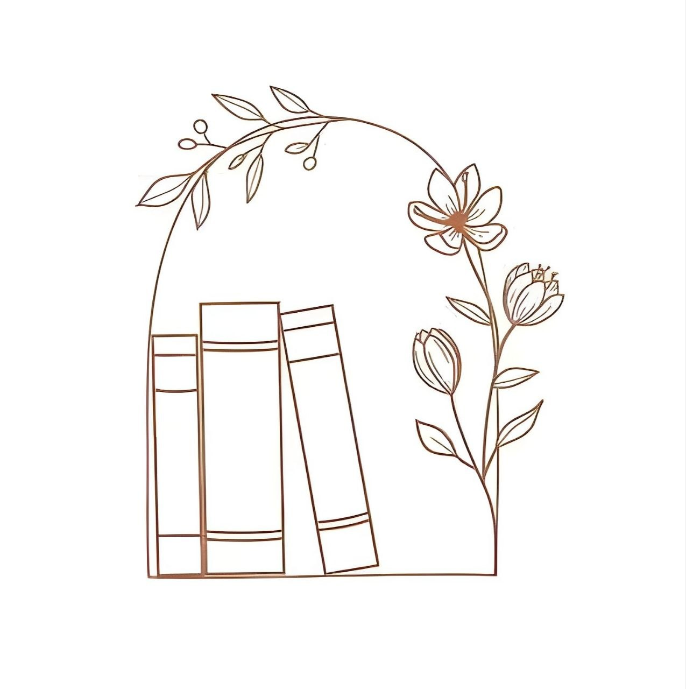
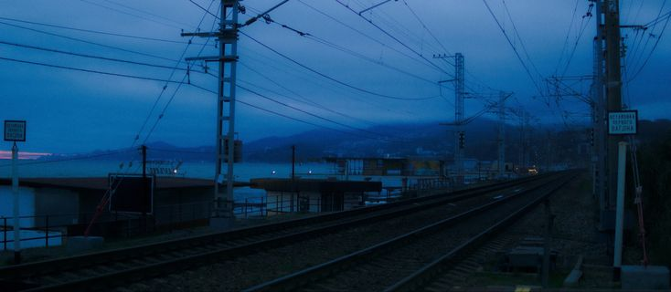

توثيق تفصيلي للمعمارية الخوارزمية المتقدمة المُطبّقة في مشروعَي نظام إدارة المكتبة وشبكة القطارات السورية، مع تحليل عميق للتعقيد الزمني والمكاني لكل هيكل بيانات.

تم بناء هذا النظام ليكون حلاً برمجياً متيناً (Robust) وقابلاً للتوسع (Scalable) للتعامل مع قواعد بيانات ضخمة. المعضلة الأساسية في أنظمة المكتبات التقليدية هي ظاهرة "تدهور الأداء" (Performance Degradation). عند استخدام هياكل بيانات خطية مثل المصفوفات الديناميكية (ArrayList) أو القوائم المترابطة (LinkedList)، فإن عمليات البحث تتطلب المرور الخطي على العناصر بتعقيد زمني O(n). في حال وجود مليون كتاب، سيحتاج النظام إلى مليون عملية مقارنة في أسوأ الحالات!
لتجاوز هذا العنق الزجاجي (Bottleneck)، تم التخلي تماماً عن الهياكل الخطية واستبدالها بهياكل بيانات غير خطية (Non-linear Data Structures) تعتمد على الأشجار المتوازنة والأكوام، مما يضمن أداءً لوغاريتمياً ثابتاً O(log n) بغض النظر عن حجم البيانات.
تم اختيار شجرة AVL (Adelson-Velsky and Landis) كحاوية أساسية للكتب. شجرة البحث الثنائية العادية (BST) تعاني من ثغرة قاتلة: إذا تم إدخال الكتب بأرقام متسلسلة، فإن الشجرة ستتحول إلى سلسلة مترابطة مائلة (Skewed Tree)، مما يعيد التعقيد الزمني إلى O(n). هنا تتدخل خوارزمية AVL لكسر هذا التسلسل وفرض التوازن الإجباري.
تحتوي كل عقدة AVLNode على متغير height يمثل أطول مسار من تلك العقدة إلى أبعد ورقة (Leaf) تحتها. أثناء عملية إدخال كتاب جديد عبر خوارزمية التكرار الذاتي (Recursion)، وبعد العثور على المكان المناسب، تبدأ مرحلة العودة (Backtracking) لتحديث ارتفاع كل عقدة أب وحساب عامل التوازن:
Time: O(1) قوة الـ AVL تكمن في إعادة هيكلة نفسها في الذاكرة دون نقل أي بيانات فعلية (Zero Data Movement)، بل فقط عبر تعديل مراجع الذاكرة (Pointers). النظام مجهز بـ 4 خوارزميات تدوير دقيقة:
Time: O(log n) عند استعلام الموظف عن كتاب برقم الـ ISBN، تبدأ الخوارزمية من الجذر وتستبعد نصف الشجرة في كل خطوة. في شجرة تحتوي على مليون كتاب، نصل للنتيجة بـ 20 عملية مقارنة فقط كحد أقصى.
Time: O(n) لعرض الكتب مرتبةً أبجدياً، نستخدم خوارزمية العبور In-Order (Left → Root → Right) التي تستخرج العقد مرتبةً بشكل طبيعي دون الحاجة لأي خوارزمية فرز إضافية.
طابور الانتظار (Waitlist) للكتب غير المتوفرة يمثل تحدياً منطقياً. قواعد النظام الأكاديمي تفرض أفضلية مطلقة للطلاب الخريجين isGraduated = true. لتطبيق هذا الشرط دون فرز متكرر ومكلف، تم استخدام هيكل بيانات Min-Heap.
يعمل الـ Heap بناءً على مُقيّم (Comparator) يحدد "وزن" كل طالب: أولاً يتم فحص حالة التخرج، فالخريج يتقدم على غير الخريج. عند التساوي يُحتكم للـ Timestamp.
Time: O(log n) عند إضافة طالب جديد يُوضع في أسفل الكومة، ثم تبدأ خوارزمية Bubble-Up فتقارنه مع عقدة الأب وتصعّده حتى يستقر الخريج في القمة متجاوزاً كل الطلاب العاديين.
Time: O(log n) عند إرجاع الكتاب، تسحب الدالة جذر الكومة (الطالب الأحق)، تضع آخر عقدة في القمة، ثم تشغّل Heapify-Down لإعادة الترتيب الهرمي الصارم.
الواجهة الرسومية انعكاس لهندسة برمجية نظيفة تعتمد على مبادئ فصل الاهتمامات (Separation of Concerns):

لا يمكن بناء خوارزميات قوية دون نماذج بيانات (Classes) متينة. تم تصميم الكائنات الأساسية لتكون محصنة رياضياً ضد الأخطاء التي تنهار بسببها خوارزميات مثل ديكسترا.
يُمثل هذا الكلاس المحطة (Vertex/Node) في بنية الرسم البياني.
يُمثل هذا الكلاس الطريق (Directed Edge) الذي يربط عقدتين ويحتوي على الوجهة Destination والوزن Distance.
يُدار النظام عبر الكلاس المركزي TrainPath.java. تم تصميم الشبكة كـ رسم بياني موجه وموزون (Weighted Directed Graph).
لتفادي المصفوفات ثنائية الأبعاد (Adjacency Matrices) وهدرها الذاكري، تم هندسة النظام بـ قوائم الجوار (Adjacency List) عبر HashMap<Station, List<Path>> Network. التعقيد المكاني المثالي للشبكات المتفرقة: O(V + E).
الخوارزمية المعيارية للرسوم البيانية ذات الأوزان الموجبة، تُستدعى للرد على طلب "أقصر طريق بين محطتين".
Time: O(E log V)
Time: O(V + E) للتحقق من خلو الشبكة من المسارات المغلقة (Loops) تم برمجة DFS بأسلوب التلوين الثلاثي (3-Coloring Technique):
إذا حاول DFS زيارة جار وتفاجأ بحالته "1" فهذا يعني وجود Back Edge — دليل رياضي حتمي على حلقة مغلقة.
Time: O(V log V) لإبراز المحطات المركزية، بُني Comparator مخصص يجلب حجم قائمة المسارات الخارجة لكل محطة ويمرره لـ Collections.sort فرزاً تنازلياً لإظهار المحاور (Hubs) أولاً.
يدعم النظام استيراد وتصدير الشبكات المعقدة عبر نظام نصوص مهيكل:
تم بناء واجهة رسومية تعتمد على نمط MVC (Model-View-Controller). الطبقة الوسيطة TrainController.java تعمل كبوابة حراسة تمنع الواجهات من التخاطب المباشر مع محرك الغراف وتلتقط الاستثناءات وتحولها لرسائل واضحة.
تم بناء MapPanel.java وStation_UI.java لرسم الشبكة تفاعلياً:
عند تنفيذ "أقصر مسار"، تقوم الدالة isInShortestPath(source, dest) بمقاطعة كل مسار في الشبكة مع مخرجات ديكسترا. المسار الفائز يتحول من اللون السماوي Color(0, 180, 255) إلى الذهبي المضيء Color(255, 215, 0)، مما يقدم تغذية بصرية مبهرة للمستخدم.